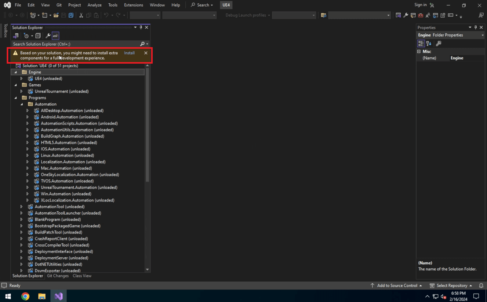
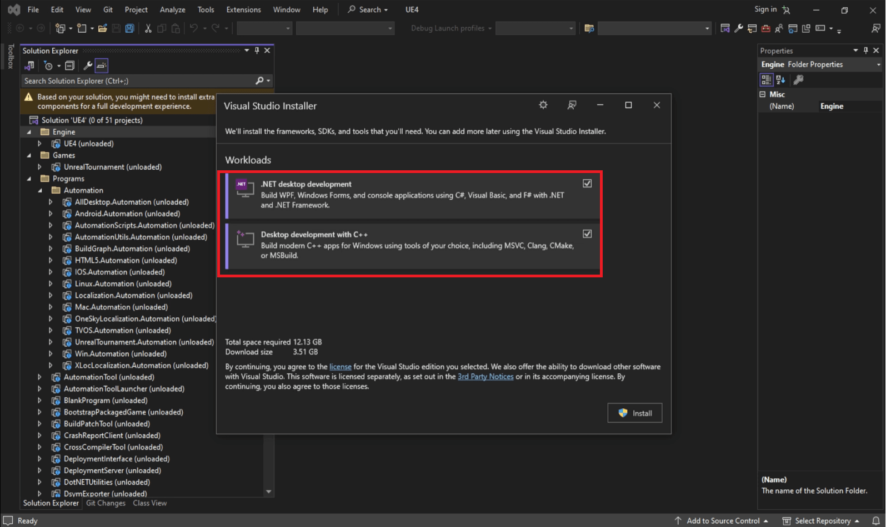
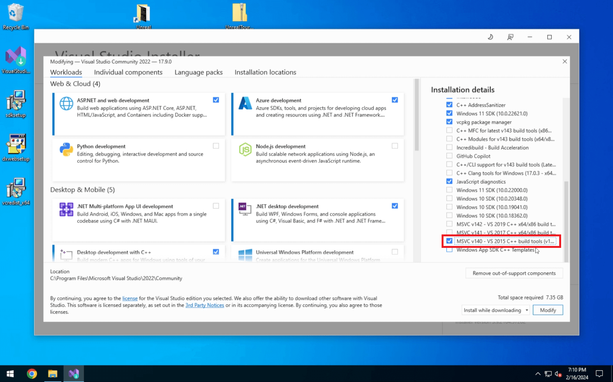

Source folders are built and functional in VS2015-2017
Packages required:
a. Install VS Community 2022 using the VisualStudioSetup.exe
b. Open the UE4.sln found in the root of the UT source code folder
c. VS should suggest some addon frameworks and tools to install - install these
 d. Close VS
e. Run VisualStudioSetup.exe and install the MVSC VS 2015 package
a. Install Windows SDK 8.1
b. Install Visual C++ Redistributable Packages for Visual Studio 2013
c. Microsoft DirectX End-User Runtime
Building the UE and UT sources should work now